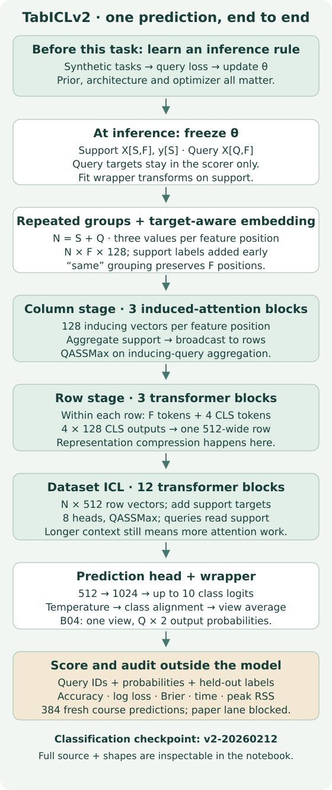
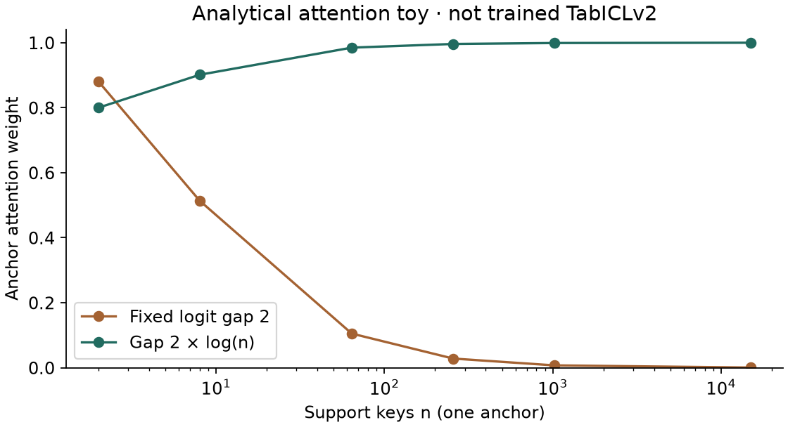
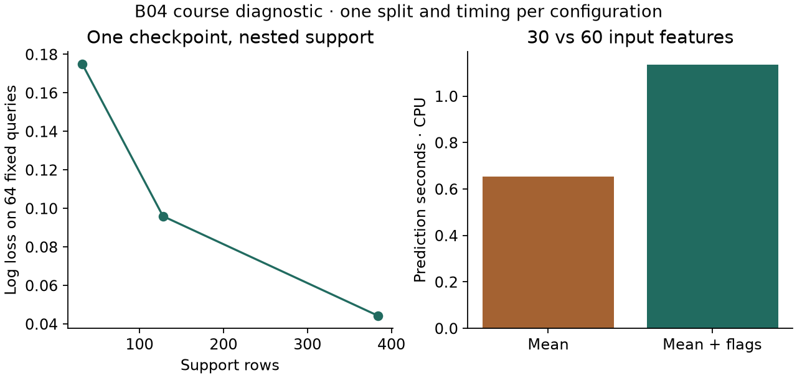

Research bridge · B04 · core
TabICL: compress features, then learn from context¶
Your win: trace a query through TabICLv2 and design a context-length comparison that separates representation cost, information access and prediction quality. Read the core in about 20 minutes; use the lab for implementation and defense.
B03 left a practical question: if support rows replace task-specific weight updates, what happens when that support grows? TabICL first constructs one vector per row, then runs dataset-level attention on those vectors. This is a useful flat-table baseline for our relational mission, and a building block for relational systems; it does not itself recover missing joins or temporal histories. Recall L066 and the earlier ICL scaling work before treating this as a new model from scratch.
Prerequisites: matrix shapes, dot-product attention, entropy and support-fitted preprocessing. B03 reviews the first and third questions; ask the agent for a worked attention example if needed.
See the idea · then trace the details
TabICL: trace column, row and dataset computation
First understand a column, then a row, then the labeled dataset.
1Learn column context
Column values ↔ inducing points
Column processing uses a compact set of inducing points to construct contextual cell representations.
2Compress each row
Cell representations → row representation
Row attention combines a row’s feature representations. The dataset-level learner then works on rows rather than the full cell grid.
3Learn from labeled rows
Support row vectors + labels → query class
Dataset-level in-context learning conditions on labeled support representations and predicts the query labels.
Pause and predict: Where does reducing the number of features stop being the same as reducing context length?
After row compression, the dataset transformer sees row representations. Feature count and support-row count affect different stages.
Answer: After row compression, the dataset transformer sees row representations. Feature count and support-row count affect different stages.
1. Two stages, three operations¶
Think of the first stage as constructing a compact description of each row. The second stage asks: given these descriptions and the support labels, what should this query's label be? The first stage contains column embedding and row interaction; “two-stage” does not mean two neural layers.


Let S be support rows, Q query rows, N=S+Q and F retained features. The pinned classification checkpoint uses 128-wide feature embeddings. Repeated three-feature grouping in same mode keeps F positions—it does not turn 30 features into 10 tokens. Support labels enter the feature embeddings early; unknown query labels are never inserted. Column attention uses 128 inducing vectors to gather support information and broadcast it back. Within each row, four CLS tokens collect feature information; concatenating their outputs yields 512 numbers per row. Twelve ICL blocks then let query rows read labeled support representations before a prediction head produces class probabilities. Architecture and configuration · Pinned model source.
Worked shape trace: S=128, Q=64, F=30 gives 192×30×128 feature embeddings, then 192×512 row vectors, then 64×2 probabilities for the two-class course task. Each row block handles 34 tokens including CLS. The checkpoint has a ten-class head; its wrapper selects the task's classes. These shapes omit table batches and ensemble views.
Predict: With 60 submitted features and the same support, which stage sees a wider input? The row stage does, before compression; ICL still sees512-wide row vectors. Constant-column filtering may reduce the actually retained width.
2. Compression saves a dimension, not every quadratic term¶
A cell-based row-attention stage repeats comparisons across feature positions. Moving dataset attention after row compression removes that factor from this stage. Inducing attention also replaces dense column-wise row comparisons with gather/broadcast operations. Row interaction still depends on feature width; dataset attention still depends on support length. Exact runtime depends on dimensions, masks, kernels, caching and preprocessing. A cost expression is a reason to measure, not a speed result. TabICL architectural comparison · Inference implementation.
Small count: For one query and 128 support rows, dataset attention needs 128 query-to-support scores per head after compression. Repeating this independently for 30 feature positions would need3,840 such scores. This isolates that operation only: it excludes support-to-support attention, projection work and representation construction. Flash-style kernels may avoid storing every score even when they perform the corresponding computation.
3. More context can dilute attention¶
Use a deliberately simple oracle: one anchor has logit 2 and each of n−1 distractors has logit 0. Its attention weight is exp(2)/(exp(2)+n−1). It falls from about .881 at n=2 to .105 at n=64 even though the anchor's logit is unchanged. With an illustrative log(n) multiplier, the anchor weight becomes n²/(n²+n−1), about .985 at n=64. This is exact arithmetic for chosen logits, not measured model accuracy.


TabICLv2 uses a learned, query-aware scaling rule before dot-product attention:
q_scaled = q × base_MLP(log S) × [1 + tanh(gate_MLP(q))].
The base depends on support length; the gate depends on the projected query and modulates each coordinate. The final attention still uses softmax and the head-dimension normalization. The toy's fixed log multiplier is not this learned rule. A random-weight output/gradient check agrees with the pinned QASSMax implementation, but validates only the equation. QASSMax definition · Complete query-scaling code.
Normalized attention entropy is −Σ p log(p)/log(n): 0 for a point mass, 1 for uniform attention when n>1. Neither low entropy nor a large anchor weight guarantees correct prediction; attending sharply to the wrong support row can be confidently wrong.
4. One intervention answers one question¶
Holding a checkpoint fixed while increasing support changes both available evidence and context length. It tests an operating point; it does not isolate an architectural cause. Holding queries fixed helps paired comparison. Changing only attention scaling with fixed Q/K/V isolates a local numerical mechanism. Training matched attention variants under the same prior, updates and validation protocol addresses a different causal question. Swapping scaling in an already trained model is not equivalent to those matched pretrained variants.
The paper also changes its task prior and optimizer. Its ablations are the relevant source for attribution; a cross-version leaderboard cannot assign every gain to QASSMax. Preserve the difference between the paper's ablation checkpoints and its final production checkpoint. Ablation study.
5. Measure the whole information path¶
We froze one checkpoint, all raw rows, a support ordering and 64 query IDs before running six course configurations. Nested supports contain 32/128/384 rows. Four 16-row query batches are compared with one 64-row call at support128. Query labels are only used by the independent scorer; transforms are fitted on support. These statements describe this worker and source configuration, not every release or deployment.
| Configuration | Support | Correct / 64 | Log loss | Predict seconds | Peak RSS MiB |
|---|---|---|---|---|---|
| clean-32 | 32 | 61 | 0.174837 | 0.505 | 664.58 |
| clean-128 | 128 | 63 | 0.095919 | 0.609 | 677.20 |
| clean-384 | 384 | 63 | 0.044251 | 1.236 | 680.25 |
| batch-128 | 128 | 63 | 0.095919 | 1.975 | 677.64 |
| mean-128 | 128 | 62 | 0.132061 | 0.652 | 674.66 |
| indicator-128 | 128 | 62 | 0.127319 | 1.135 | 693.95 |


The smaller batches produce identical probabilities here but spend more prediction time repeating uncached work. They do not establish universal batch invariance. Memory is fresh-process peak CPU RSS including imports, model and data—not GPU memory or isolated attention storage. One timing observation per configuration cannot reproduce a hardware speedup claim. Three small support sizes cannot establish million-row scaling.
The separate missingness comparison masks 15% of values independently, fits column means on the 128 support rows, and either fills missing entries or also appends 30 flags. Accuracy stays 62/64 in both arms; log loss improves slightly with flags while Brier score worsens. Flags change the representation and computation. This single MCAR split does not establish robustness to changed missingness mechanisms.
The pinned release's DataFrame encoder constructs a numeric mean imputer; its ndarray route passes through that stage. B04 explicitly supplies its own support-fitted numeric imputation before either model arm. Do not generalize a README statement across input types or releases. Inspect the actual path and test it. Pinned preprocessing · Complete frozen protocol and raw results.
6. Full reproduction: a specific gate remains closed¶
B04-TABICLV2-FIG3-ATTENTION-FADING is INCOMPLETE_SOURCE_PROTOCOL. Figure 3 uses four negative clusters, one support anchor, 20 fixed nearby queries and three scaling variants. We archived the paper, figure assets, upstream source and author checkpoint inventories, but could not authenticate the exact generator/seeds/full grid, the three matched checkpoint identities or raw reference values. The released v2 classifier is sufficient for our course diagnostic, not for reconstructing all three original arms. Original Figure 3 · Source gate.
The reproducibility operator refuses benchmark dispatch. No random substitute was labeled Figure 3. Full pretraining and the full benchmark suite are NOT_RUN. Current upstream includes pretraining/prior code, but its README says the released checkpoints did not use cautious weight decay, unlike paper v1's description. Preserve the discrepancy rather than silently combining recipes. Pinned release notes.
The course diagnostic completed all six frozen configurations on CPU for USD0 cloud/API spend. All 384 prediction rows were independently scored; ten corruptions were rejected. Query-scaling source parity, saved-evidence replay, fresh checkpoint inference and original pretraining remain distinct evidence.
7. Build, check, defend¶
Student notebook · Executed solution · Readable notebook · Field guide.
Implement three live functions: stable attention with normalized entropy, support-only mean fitting, and transformation with optional missingness flags. Hand-check a two-key readout before using NumPy. Then use your functions to regenerate the distractor curve and reconstruct every diagnostic's transformed inputs; replay all predictions with the independent scorer. The solution includes the complete upstream model modules and classifier/preprocessor source for inspection, plus the exact diagnostic worker. The embedded packet runs offline; replay does not generate fresh model predictions.
EXIT — write before opening the rubric: Trace the 192×30 input through the model; explain what compression saves and what remains expensive; distinguish the three kinds of attention comparison above; interpret the batching and missingness findings; identify the evidence needed to unblock Figure 3. Propose one falsifier of your explanation and say how you would revise it. State the limitation of the small support sweep.
Defense rubric · reveal after writing
A strong answer locates row compression after column embedding, preserves the512-wide ICL path, keeps query targets out of preprocessing/inference, distinguishes information changes from architecture interventions, gives both quality and resource measures, and refuses to infer paper parity or general missingness robustness. An acceptable falsifier might find that batch-dependent preprocessing changes predictions despite the model mask; then the wrapper must join the information-access contract.
Revisit after 1, 7 and 30 days: reconstruct the shape trace without the figure, derive the anchor-weight formula, and design a different missingness failure case. Ask the agent follow-up questions or submit your defense for feedback. Author checks do not complete your learning: PENDING_WRITTEN_DEFENSE; the Year 5 exit gate remains separate.
Next: B05 asks what changes when pretraining tasks come from real data and support is retrieved. B12 revisits tabular ICL inside OpenRFM; B18a tests context and missingness changes. Primary reading: TabICLv2 §§3–7, with the pinned release beside it.